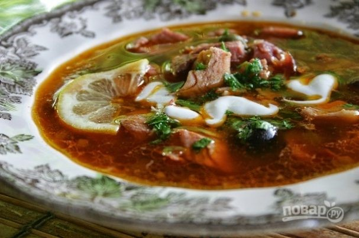
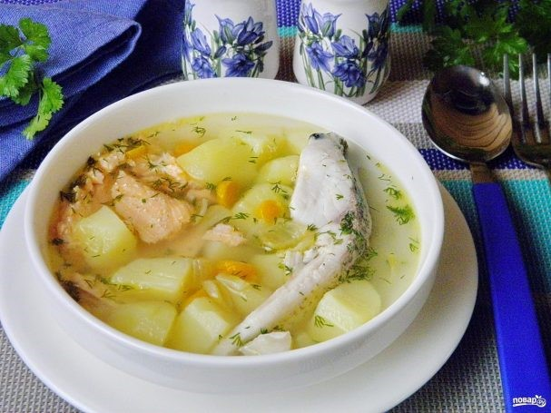
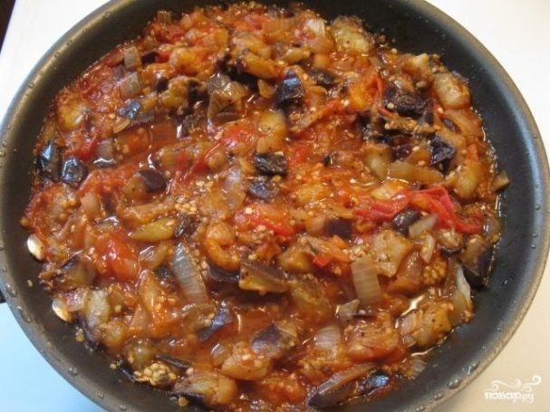
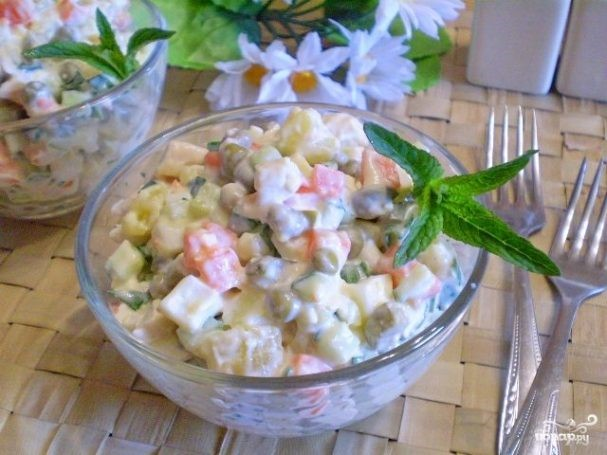

Суп-солянка

Ингредиенты:
-
Мясо — 450 Грамм (свинина, говядина, курица или все вместе)
-
Мясные изделия — 300 Грамм (ветчина, колбаса, копчености и т. д.)
-
Растительное масло — 2 Ст. ложки
-
Чеснок — 2-4 Зубчиков
-
Луковица — 1 Штука
-
Томатная паста — 1 Ст. ложка
-
Маринованные огурчики — 2-4 Штук
-
Маслины — По вкусу (+ каперсы по желанию)
-
Соль, перец, специи, зелень — По вкусу
-
Лимон и сметана — По вкусу
-
Мясо вымойте, выложите в кастрюлю и залейте водой. Туда же отправьте копчености. Можно также добавить
лавровый лист и овощи для аромата. Варите бульон на медленном огне пару часов до готовности мяса.
-
Когда мясо сварилось, аккуратно достаньте его из бульона, остудите немного и измельчите. Бульон
процедите и снова отправьте на огонь. Выложите туда нарезанное мясо.
-
Следом отправьте мясные деликатесы. В данном случае это ветчина и салями.
-
Нарежьте огурчики. Маслины можно добавлять перед подачей в тарелку или сразу отправить в бульон. Я
предпочитаю второй вариант. Кроме того, я советую добавить горсть каперсов.
-
Выложите все в бульон, доведите до кипения и варите на медленном огне. Посолите по вкусу.
-
Параллельно очистите и измельчите лук с чесноком. Выложите на сковороду с растительным маслом и
обжарьте. Добавьте томатную пасту и влейте немного бульона или рассола от огурцов.
-
Посолите, добавьте перец и специи по вкусу. Также я советую добавить чайную ложку сахара. Томите соус
минут 5, помешивая.
-
Выложите его в бульон, аккуратно перемешайте и варите солянку еще минут 5-7.
-
Выключите огонь, накройте кастрюлю крышкой и оставьте на полчасика, чтобы солянка настоялась. Подавайте
к столу горячей, дополнив лимоном и сметаной по желанию.
Рыбный суп классический

Ингредиенты:
-
Рыба — 250 Грамм (лосось + мелкая рыба)
-
Картофель — 150 Грамм
-
Лук — 75 Грамм
-
Морковь — 75 Грамм
-
Корень петрушки — 1 Штука
-
Лавровый лист — 2 Штуки
-
Сливочное масло — 70 Грамм
-
Укроп — 1 Пучок
-
Соль — По вкусу
-
Перец черный молотый — По вкусу
-
Рыбу для варки бульона положите в кастрюлю, добавьте корень петрушки, лавровый лист, соль. Залейте
холодной водой, доведите до кипения и сварите бульон. Из готового бульона удалите хребты рыбы, процедите
его через марлю. Если на хребтах много мяса, то снимите его и верните в бульон. Если варите из мелкой
рыбешки, то ее после варки нужно выбросить, как и корень петрушки, специи. В среднем варите бульон минут
30.
-
Порежьте мелко лук и морковь. Пассеруйте овощи на сливочном масле до мягкости.
-
Порежьте некрупно картофель.
-
В процеженный бульон положите картофель, проварите его 15 минут. После добавьте порционные кусочки мяса,
жареные овощи, проварите суп 10 минут.
-
Очищенный картофель натрите на большой тёрке.
-
Также натрите яйца, очищенную морковь и свеклу.
-
Лук нашинкуйте. Чтобы он не горчил, залейте его кипятком на пару минут.
Потом воду слейте.
-
Возьмите тарелку для подачи. Выложите первым слоем картофель. Смажьте его
майонезом.
-
В конце варки супа добавьте мелко порезанный укроп и перец черный молотый, выключите плиту. Рыбный суп
классический готов!
Тушеные с баклажанами и помидорами

Ингредиенты:
- Баклажан — 2 Килограмма
- Фарш (баранина и говядина) — 1 Килограмм
- Лук — 2 Штуки
- Помидор — 5 Штук
- Чеснок — 4 Зубчика
- Белое вино — 1 Стакан
- Орегано — 1 Чайная ложка
- Рубленая петрушка — 0,25 Стакана
- Панировочные сухари — 0,25 Стакана
- Масло растительное — По вкусу
- Масло сливочное — 60 Грамм
- Мука — 6 Ст. ложек
- Молоко — 1 Литр
- Сыр "Фета" — 150 Грамм
- Мускатный орех — По вкусу
- Порежьте баклажаны кружками толщиной до 1 сантиметра. Посыпьте каждый кружок солью и оставьте на 20
минут. Соль вытянет из баклажана горечь. Затем соль смойте и просушите баклажаны бумажными
салфетками.
- Положите на противень бумагу для выпечки, на неё разложите кружочки баклажан. Смажьте небольшим
количеством масла. Желательно использовать оливковое.
- Поставьте противень в духовку на самый верх, под гриль. Запекайте 5-10 минут до румяной корочки.
Баклажаны должны стать мягкими.
- Добавьте на сковороду фарш и обжарьте с луком 5 минут.
- Затем добавьте чеснок, нарезанные помидоры, посолите и поперчите по вкусу. Тушите еще 10 минут.
- После этого добавьте вино и оставьте тушиться на полчаса.
- Добавьте орегано, петрушку и через пять минут снимите с огня.
- Возьмите форму для запекания квадратную или прямоугольную со стороной около 30 сантиметров. Смажьте её
растительным маслом и посыпьте панировочными сухарями.
- Выложите в форму слой баклажан затем слой фарша с соусом.
- Затем снова баклажаны и снова соус. Сверху должен оказаться слой баклажан. Потрите на верхний слой
половину сыра.
- Теперь нам нужно приготовить соус "Бешамель" для мусаки. Нагрейте молоко до теплого состояния. В
сковородке растопите сливочное масло. Добавляйте в масло понемногу муку, быстро перемешивая, затем
вливайте небольшими порциями молоко, постоянно помешивая, чтобы не образовались комки. Доведите до
густоты.
- Поставьте мусаку в разогретую до 180 градусов духовку на час.
Салат "Столичный" классический рецепт

Ингредиенты:
-
Куриное филе — 350 Грамм
-
Огурец свежий — 1 Штука
-
Огурцы консервированные — 2 Штуки
-
Морковь — 1 Штука
-
Картофель — 2 Штуки
-
Яйца — 3 Штуки
-
Горошек консервированный — 100 Грамм
-
Майонез — 3-4 Ст. ложек
-
Зелень — По вкусу
-
Приготовим продукты для салата. Овощи, яйца, куриное филе нужно заранее
отварить до полной готовности. Остудить. Овощи и яйца почистить.
-
Режем кубиками картофель. При нарезке продуктов на салат придерживайтесь
одного размера. Режем кубиками морковь .Режем кубиками яйца .Режем кубиками
куриное филе. Режем кубиками консервированный огурец. Режем кубиками свежий
огурец.
-
Складываем продукты в глубокий салатник, добавляем отцеженный от жидкости
горошек.
-
Мелко нарезаем зелень.
-
Добавляем зелень в салат.
-
Добавляем майонез и соль по вкусу. Черный перец молотый приветствуется.
-
Дайте салату минут 10-15 настояться и можно подавать к столу.